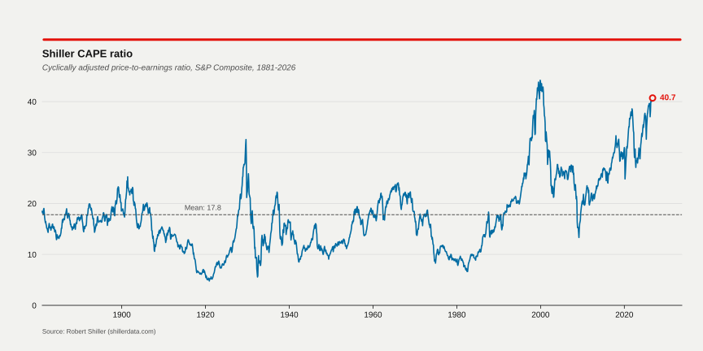
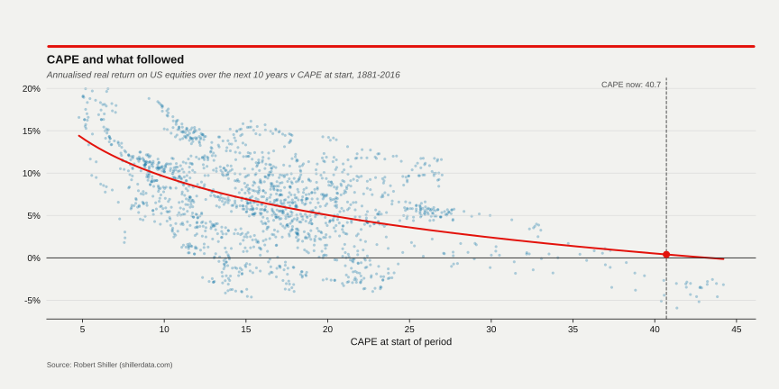
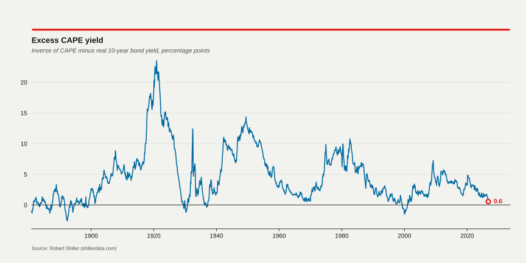

Shiller CAPE dashboard
Data through October 2026. Fetched 2026-11-11. Updated automatically when Shiller publishes a new file.
CAPE
40.7
October 2026 (provisional)
Percentile since 1881
99
share of months with a lower CAPE
Percentile since 1990
95
share of months with a lower CAPE
Mean / median
17.8 / 16.6
full sample
The latest month is provisional. The source says: "Oct price is Oct 2nd close". The value will probably be revised in the next update.


The fitted line (log CAPE, in-sample, n = 1,630, R-squared = 0.26) implies 0.4% a year at today's CAPE. The observations use overlapping 10-year windows and are strongly autocorrelated, so the uncertainty is far larger than the line suggests. This is a descriptive relationship, not a forecast.
